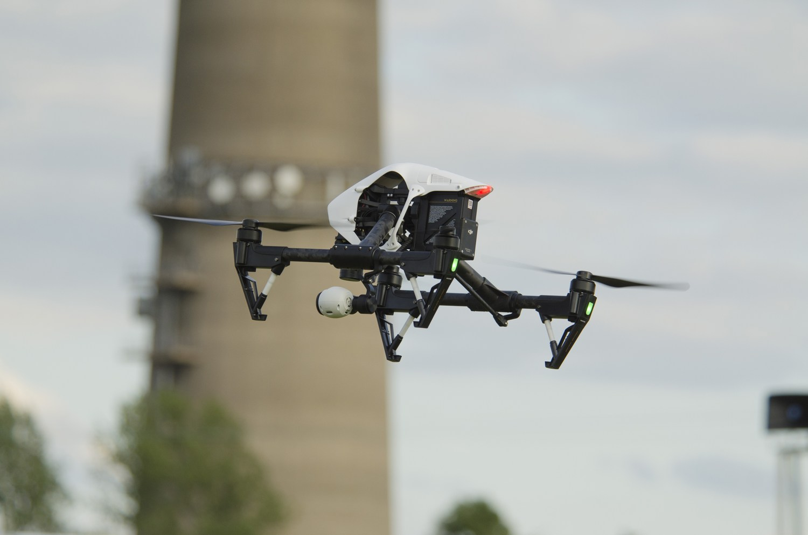

DIGITALIZACIÓN DEL ENTORNO
Fotogrametría
Del terreno al modelo digital. Captura aérea para generar ortofotos, nubes de puntos y modelos 3D.
Terreno · Obra · Modelos 3D
INSPECCIÓN DE ESTRUCTURAS CON DRONES
Inspeccionamos estructuras, con especial atención a las torres de telecomunicaciones.
Documentamos el estado de la estructura, las antenas y sus soportes con imágenes de detalle y modelos 3D. Información para apoyar la revisión técnica, planificar el mantenimiento y seguir la evolución de cada emplazamiento.

01 / QUÉ HACEMOS
Elegimos la captura y el tipo de información que necesita tu proyecto. Explora nuestros servicios y descubre qué podemos aportar.
DIGITALIZACIÓN DEL ENTORNO
Del terreno al modelo digital. Captura aérea para generar ortofotos, nubes de puntos y modelos 3D.
INFORMACIÓN TÉRMICA
Detecta diferencias de temperatura y localiza zonas que requieren una revisión más detallada.
CONTROL DE INFRAESTRUCTURAS
Imágenes de detalle para documentar el estado de torres, cubiertas e instalaciones de difícil acceso.
UNA NUEVA MIRADA
Contenido aéreo para presentar un espacio, comunicar un proyecto o mostrar la evolución de una obra.
CONOCIMIENTO Y PRÁCTICA
Formación con drones para desarrollar tus conocimientos y practicar la planificación y ejecución del vuelo.
EMPEZAR CON CRITERIO
Te ayudamos a definir el enfoque de tu proyecto y a entender qué tipo de captura y resultados necesitas.
EL RESULTADO EMPIEZA EN TU OBJETIVO
Documentar el estado de una instalación.
Conocer la geometría de un entorno.
Localizar diferencias de temperatura.
INFORMACIÓN QUE SIRVE PARA ACTUAR
Una buena captura empieza por una pregunta concreta: ¿qué necesitas medir, revisar o comunicar?
Definimos contigo la información que buscas y el formato de entrega. Así, las imágenes se convierten en una herramienta de trabajo para tu equipo.
02 / CÓMO TRABAJAMOS
Desde la primera conversación hasta la entrega, acordamos el alcance para que sepas qué información vas a recibir.
Revisamos el emplazamiento, el objetivo y los resultados que necesitas.
Definimos el equipo, el trabajo de campo y las condiciones de la operación.
Realizamos la captura siguiendo el alcance acordado para el proyecto.
Organizamos las imágenes y los resultados en los formatos pactados.
03 / DRONTEC + INTELSI
Drontec es la división de drones de Intelsi Telecomunicaciones.
Conectamos la captura aérea con las necesidades del trabajo técnico: documentación, inspección y digitalización de infraestructuras.
Desde Rellinars, Barcelona, estudiamos cada proyecto para proponer una solución ajustada al entorno y a los datos que necesitas.
Conoce IntelsiANTES DE EMPEZAR
La ubicación del trabajo, una descripción del objetivo y el tipo de resultado que buscas. Si tienes planos, fotografías o una fecha prevista, puedes enviárnoslos por correo.
Depende del servicio: fotografías y vídeo, imágenes térmicas, ortofotos, nubes de puntos o modelos 3D. Acordamos los formatos y el alcance antes de comenzar.
Cada operación necesita revisar el entorno, las condiciones del espacio aéreo y los requisitos aplicables. Estudiamos la viabilidad del emplazamiento antes de programar la captura.
Escríbenos indicando tu experiencia y qué uso quieres dar al dron. Te informaremos de la formación disponible y de la opción adecuada para tu objetivo.
04 / EMPEZAMOS POR UNA CONVERSACIÓN
Cuéntanos dónde, qué necesitas y para cuándo.
Te ayudaremos a definir el siguiente paso.